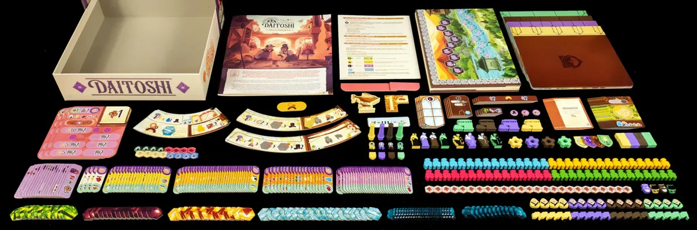
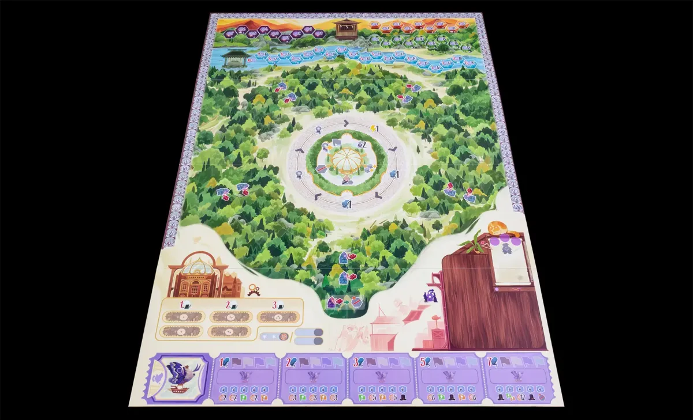
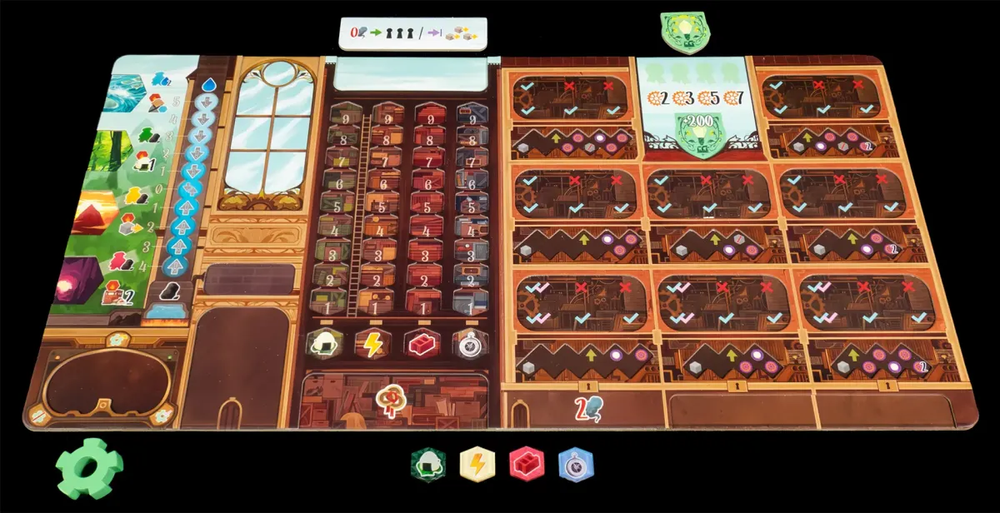

Tablero
El tablero de Daitoshi es un elemento fundamental en el juego, diseñado para ofrecer una experiencia visualmente atractiva y funcional. Con un diseño inspirado en la estética japonesa, el tablero presenta una cuadrícula de 5x5 casillas, cada una con un fondo que recuerda a un tatami tradicional. Las casillas están decoradas con patrones sutiles que evocan la cultura japonesa, como flores de cerezo y ondas de agua, creando un ambiente inmersivo para los jugadores.
El tablero está dividido en dos áreas principales: la zona de juego y la zona de puntuación. La zona de juego es donde los jugadores colocan sus piezas, mientras que la zona de puntuación muestra el progreso de cada jugador a lo largo de la partida. Además, el tablero cuenta con espacios designados para las piezas especiales y las cartas de acción, lo que facilita la organización durante el juego.
En resumen, el tablero de Daitoshi no solo es un componente esencial para la mecánica del juego, sino que también contribuye significativamente a la atmósfera y la experiencia general de los jugadores, haciendo que cada partida sea visualmente atractiva y emocionante.
¡Explora el tablero de Daitoshi y descubre cómo cada casilla puede ser la clave para tu victoria!
¡Sumérgete en el mundo de Daitoshi y disfruta de cada movimiento en este hermoso tablero!
Contenido del juego
- Tablero Principal (de cartón)
- 4 Tableros de Jugador (de cartón)
- 4 Emblemas de Fábrica (1 de cada color) (de cartón)
- 4 Marcadores de Puntos de Victoria (1 de cada color) (de madera)
- 4 Chimeneas (1 de cada color) (de madera)
- 16 Peregrinos (4 de cada color) (de madera)
- 32 Indicadores de Progreso de Invento (8 de cada color) (de madera)
- 4 Marcadores de Prestigio (1 de cada color) (de madera)
- 4 Marcadores de Reputación (1 de cada color) (de madera)
- 4 Peones de Gusano-Bus (1 de cada color) (de madera)
- 20 Banderas (5 de cada color) (de madera)
- 4 Ruedas de Producción (1 de cada color) (de madera)
- 8 Peones de Magnate (2 de cada color) (de madera)
- 16 Losetas de Operación (de cartón)
- 4 Losetas de Subvención (de cartón)
- 15 Losetas de Distrito (de cartón)
- 64 Losetas de Naturaleza (de cartón)
- 18 Losetas de Ciudad (de cartón)
- 3 Tableros de Megamaquina (de cartón)
- Peón de Megamaquina (de madera)
- 100 Fichas de Inventos (de cartón)
- 60 Trabajadores (15 de cada color) (de madera)
-
36 Fichas de Vapor (de plástico)
- 24 de Valor 1
- 12 de Valor 3
- 3 Fichas de Mejora de la Megamaquina (de cartón)
- 20 Fichas de Recursos (de plástico)
- 25 Fichas de Riqueza (de plástico)
- Loseta de Jugador Inicial (de cartón)
- 2 Losetas de Bloqueo (de cartón)
- Loseta de Soborno (de cartón)
-
26 Cartas (57×89 mm.)
- 16 Cartas de Alcalde para Modo en Solitario
- 10 Cartas de Consejero para Modo en Solitario
- 4 Hojas de Referencia (de cartulina)
- Reglamento
Tablero central
Comencemos por el Tablero Principal. Este muestra en su zona central un rondel que representa la Ciudad, con dos tracks concéntricos, uno para el prestigio y otro para el gusano-bus, cada uno con cinco posiciones y unos beneficios intermedios. Alrededor de estos dos tracks circulares se desplegarán las losetas de distrito y sus expansiones (con un coste en ladrillos impresos en el tablero). En la parte superior tenemos los tracks de naturaleza, sobre los que se colocarán las losetas de naturaleza que los jugadores irán recogiendo, habilitando esos espacios como tracks por los que progresarán sus peregrinos. En la parte inferior tenemos una reserva para inventos en la parte izquierda, la zona de la megamáquina en la derecha y la cona de la ciudad en la banda inferior. Ocupando el marco superior tenemos el track de puntuación con casillas numeradas del 1 al 100.
Tablero de jugador
Cada jugador dispondrá de un tablero individual, con una zona para colocar sus piezas, una zona para colocar sus losetas de operación y otra para colocar sus losetas de subvención. En la parte superior del tablero de jugador se encuentra el track de reputación, que se utiliza para medir el prestigio del jugador a lo largo del juego. A medida que los jugadores avanzan en este track, pueden desbloquear beneficios adicionales y mejorar su posición en la ciudad.
